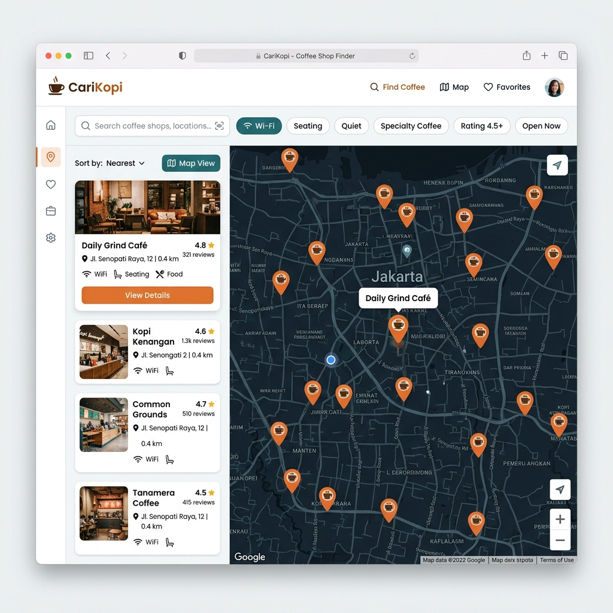

Aplikasi web pencarian dan eksplorasi coffee shop modern yang dibangun dengan Next.js 16, React 19, TypeScript, dan Leaflet.js untuk pengalaman menemukan tempat ngopi terbaik.

CariKopi (CoffeeFinder) dirancang untuk mempermudah pecinta kopi, pekerja wfh, dan mahasiswa dalam mencari coffee shop yang sesuai dengan kriteria spesifik seperti ketersediaan WiFi cepat, colokan listrik, seating area outdoor, hingga menu specialty coffee.
Pemetaan lokasi coffee shop secara visual dengan Leaflet container & marker interaktif.
Penyaringan fasilitas secara instan untuk membantu menemukan suasana kerja/nongkrong ideal.
Custom React Hook `useFavorites` untuk menyimpan coffee shop pilihan ke bookmark.
Layout yang dioptimalkan untuk perangkat seluler maupun desktop menggunakan Tailwind CSS v4.
joyadrnsyh/carikopi
Public Repository
Public Repository